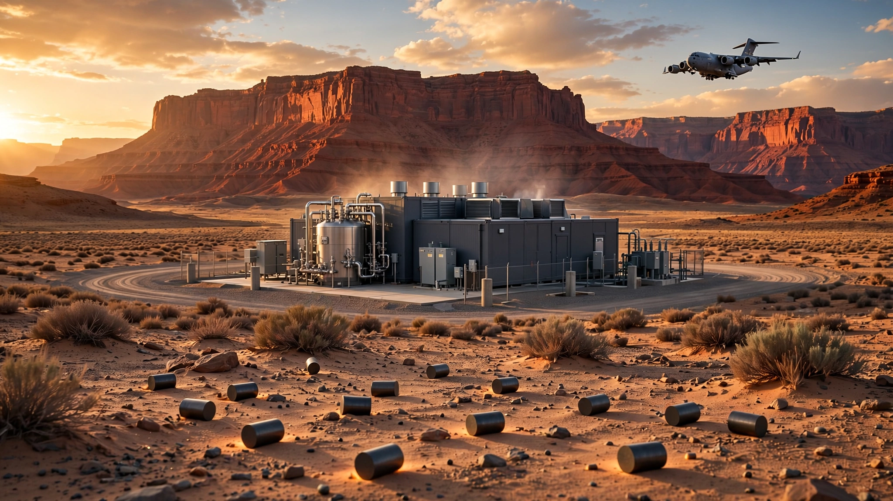

Two Nuclear Reactors Went Critical in 14 Days. The Fuel to Scale Them Doesn't Exist Yet.
America's Reactor Pilot Program just proved microreactors can go from empty field to self-sustaining chain reaction in nine months. Current HALEU fuel production can support seven more. The 400 GW target requires fuel for 60,000.

Nine months. Bare dirt to chain reaction. On June 18, Valar Atomics' Ward 250 reactor achieved zero-power criticality at Utah's San Rafael Energy Lab, confirmed by DOE's Office of Nuclear Energy at 4:30 p.m. MDT. It was the second advanced reactor to hit that mark under the Reactor Pilot Program, and the first DOE-authorized reactor ever built and operated outside a national laboratory, according to POWER Magazine's report on the milestone.
Fourteen days earlier, Antares Nuclear's Mark-0 reached the same milestone at Idaho National Laboratory. A sodium heat-pipe-cooled microreactor fueled by TRISO compacts, the Mark-0 was INL's 53rd reactor since 1951 and its first novel reactor design to achieve criticality in more than 50 years.
Two criticalities in two weeks. America hasn't moved this fast on nuclear since the Atomic Energy Commission was lighting up Idaho in the 1960s. Executive Order 14301, signed just 13 months ago, set a blunt mandate: at least three advanced reactors to criticality by July 4, 2026, the nation's 250th birthday. Two down, 16 days to go, and Aalo Atomics received DSA approval for its sodium-cooled Critical Test Reactor at INL on April 30, while Oklo's Atomic Alchemy subsidiary is targeting its Groves isotope reactor in Lockhart, Texas, though its authorization review was still in progress as of May.
But here is a number that should keep every nuclear optimist awake at night. America has produced a total of 920 kilograms of the high-assay low-enriched uranium these reactors burn, enough for roughly seven more microreactors, while the executive order's own target is 400 gigawatts of nuclear capacity by 2050.
What Actually Happened
Criticality means a reactor sustains a self-perpetuating nuclear chain reaction without external neutron input. Zero-power criticality, which both Antares and Valar demonstrated, proves core geometry, control rod behavior, and neutronics at essentially no measurable energy output before a reactor begins producing heat. INL Director John Wagner was precise about what it means and what it doesn't: "What Antares achieved is specifically zero-power criticality. This is not electricity generation, and it is not full-power operation. It is proof that the system works: the scientific and engineering validation that every subsequent step depends on."
Two genuinely different approaches produced those chain reactions. Antares built a sodium heat-pipe-cooled microreactor using HALEU TRISO fuel compacts fabricated by BWX Technologies in Lynchburg, Virginia, and its commercial product, the R1, ships as a modular 100 kWe to 1 MWe unit in an integrated transport cradle that connects directly to installation microgrids without touching the commercial grid, with agreements in place with the Air Force, Space Force, NASA, and the Defense Innovation Unit, all targeting a first deployment at Joint Base San Antonio by 2028.
Valar took a fundamentally different path, building a Gen IV high-temperature gas reactor using TRISO particles in graphite compacts, cooled by helium, rated at 100 kWt initially and scalable to 5 MWe. In February, three C-17 Globemaster III aircraft carried the reactor from California to Utah in what DOE and the Department of War called "Operation Windlord," marking the first military airlift of a nuclear reactor in history, with Kiewit Nuclear Solutions serving as EPC contractor. Taylor's summary was blunt: "Nine months ago, this was an empty site. Today, there's a critical reactor on it."
Measuring Against Vogtle
Consider what nine months means in nuclear construction. Plant Vogtle's Units 3 and 4 in Georgia won regulatory approval in 2009 at an expected cost of $14 billion, due for commercial operation in 2016-2017. Unit 3 finally went commercial in July 2023, with Unit 4 following in April 2024. Final cost: $36.8 billion, including $3.68 billion Westinghouse paid after going bankrupt during construction. Fifteen years, seven years late, budget blown by a factor of 2.6.
Per-kilowatt math: Vogtle's two AP1000 units deliver 2,234 MW combined at $36.8 billion, working out to $16,472 per installed kilowatt. Industry targets for nth-of-a-kind microreactors land between $5,000 and $10,000 per kilowatt, but nobody has built enough to validate those projections. Antares has raised $140 million in private capital, including a $96 million Series B in December 2025, while Valar hasn't disclosed costs publicly and neither company has sold a single kilowatt-hour.
Timelines are more telling than costs right now, and Antares illustrates why. Founded in 2023, the company began machining Mark-0's graphite core on January 12, 2026, and achieved criticality on June 4. Company founding to chain reaction: roughly two and a half years, with core machining to criticality clocking under five months. Vogtle approval to first chain reaction: 14 years.
| Metric | Vogtle 3&4 | Antares Mark-0 | Valar Ward 250 |
|---|---|---|---|
| Time to criticality | ~14 years | ~5 months (machining to critical) | 9 months (empty site to critical) |
| Capacity | 2,234 MWe | 100 kWe–1 MWe (R1 commercial) | 100 kWt (scalable to 5 MWe) |
| Cost | $36.8B ($16,472/kW) | $140M raised (R&D phase) | Undisclosed |
| Regulatory path | NRC commercial license | DOE Reactor Pilot Program | DOE Reactor Pilot Program |
| Fuel type | LEU (<5% enrichment) | HALEU TRISO (<20%) | HALEU TRISO (<20%) |
Not apples-to-apples. Vogtle units are baseload gigawatt-scale plants designed for 60-year lifespans; these microreactors are early-stage test units that haven't generated a commercial watt. Comparing their timelines resembles comparing supertanker construction to a speedboat launch. What matters is what happens when you try to build a fleet. And that is where the fuel math collapses.
920 Kilograms
Both Antares and Valar run on HALEU: uranium enriched to between 5% and 20% U-235, far above the roughly 4-5% enrichment in conventional light-water reactor fuel. Nearly every Gen IV design requires it because compact cores, high temperatures, and fast neutron spectra all demand higher fissile loading. No HALEU, no microreactor fleet. Full stop.
Only one producer currently supplies it: Centrus Energy operates a 16-machine demonstration cascade in Piketon, Ohio, and its total HALEU output under a DOE contract stands at just over 920 kilograms. Antares needed less than 120 kilograms for Mark-0, sourced not from Centrus but from government-held scrap material that BWXT processed. Next in line is Urenco's Advanced Fuels Facility at Capenhurst in the United Kingdom, which Antares signed in May 2026 as "the world's first multi-year commercial HALEU supply contract." That facility won't come online until 2031, initially producing 27 metric tons per year, enough for approximately 30 advanced reactors annually.
Stacking that against executive ambition reveals the gap: EO 14301 targets 400 GW of nuclear capacity by 2050, up from roughly 97 GW, meaning approximately 303 GW of new build over 24 years. Not all will be microreactors; NuScale holds NRC design approval for its 77 MWe SMR module and has a TVA agreement for up to 6 GW, while some capacity will come from restarts using conventional LEU that domestic enrichers already supply. But every design that just proved its physics in Utah and Idaho requires HALEU.
Build 303 GW entirely with 5 MWe microreactors at Ward 250 scale: 60,600 reactors, each burning 120 kilograms, demanding 7,272 metric tons of HALEU. Urenco's planned facility produces 27 metric tons per year starting in 2031. Time to fuel the fleet at that rate: 269 years.
Absurd, obviously. Scale enrichment capacity tenfold, an enormous industrial buildout that exists on no published roadmap, and you still need 27 years, achievable by 2058 but not by 2050.
A Realistic Mix Still Breaks
Nobody plans 60,000 identical microreactors. Actual deployment blends sizes: microreactors at 1-5 MWe for military bases, remote sites, and data center pods; SMRs at 50-300 MWe for grid-connected utilities; large-scale builds or restarts using conventional fuel. Split the new capacity into 30% microreactors (91 GW), 40% SMRs (121 GW), and 30% conventional restarts (91 GW), and HALEU demand for the Gen IV fraction still requires roughly 5,100 metric tons. At Urenco's planned output: 189 years of production.
Even if Centrus scales from 16 centrifuges to full commercial capacity, and DOE enrichment plans bear fruit simultaneously, and allied nations build parallel HALEU infrastructure, the gap between "two reactors proved the physics" and "fuel exists to replicate them at scale" is measured in decades. DOE's own Fuel Line Pilot Program, which selected nine companies for fuel supply chain development alongside the reactor program, implicitly concedes the bottleneck is real. No fuel initiative has published a timeline showing how to bridge from 920 kilograms to thousands of metric tons before 2040.
Where the Math Might Close First
Where military demand might close the gap first: DOD operates roughly 750 major installations worldwide. If each required 1-5 MWe of on-site nuclear power, total military microreactor demand would reach 750 to 3,750 MWe, or 150 to 750 units at 5 MWe each, translating to 18-90 metric tons of HALEU: roughly one to three years of Urenco's planned output once the facility opens. Manageable.
Janus, the Army's program established under Executive Order 14299, aims to deploy microreactors at military installations for power independence, and the Air Force selected Antares under its Advanced Nuclear Power for Installations initiative in April to prototype at Joint Base San Antonio. Defense procurement has a track record of pulling industrial capacity into existence by guaranteeing demand, just as DARPA contracts bootstrapped semiconductors in the 1960s. Military orders could create a HALEU pipeline that civilian deployments subsequently ride, the same way military GPS created the satellite infrastructure that now guides every Uber.
Limitations
Several blind spots merit acknowledgment. Reactor fuel requirements vary by design; the 120 kg figure comes from one Antares filing for a specific test configuration, and commercial units may need substantially more or less depending on enrichment levels, burnup targets, and refueling intervals. Additionally, 400 GW is aspirational policy, not binding law, and actual deployment depends on NRC licensing timelines that average 42 months and run entirely separate from DOE demonstration authorization, plus financing, public acceptance, and grid interconnection hurdles that have stalled nuclear projects for decades. Finally, HALEU alternatives exist in theory: some Gen IV concepts can use metallic fuel, molten salt configurations, or TRISO variants at different enrichment profiles, but none has demonstrated criticality under this pilot program. We use the designs that have proven their physics as our baseline because speculation about unbuilt reactors is exactly how nuclear got stuck for 50 years.
Strongest Counterargument
In 1945, the United States had produced roughly 64 kilograms of enriched uranium, the entire output of the Manhattan Project. Within 20 years, AEC had built 52 reactors at Idaho's National Reactor Testing Station alone, launched a commercial nuclear industry that reached 100 GW, and scaled industrial enrichment from laboratory curiosity to thousands of metric tons per year because government demand guaranteed the market. Sixty-four kilograms to an entire industry in two decades.
Apply that logic and the counterargument writes itself: once microreactors prove commercial viability, enrichment capacity follows demand rather than leading it, just as TSMC doesn't build fabs until customers commit wafers, and just as Antares' Urenco contract and DOE's Fuel Line Pilot Program both show supply chain investment already tracking reactor progress. Real force in that argument.
But timing is the variable nobody controls. Manhattan operated under wartime urgency with essentially unlimited federal spending. Reactor Pilot Program operates under peacetime procurement with startup capital. If scaling HALEU follows defense timelines, expect 5-10 years. Civilian nuclear timelines: 15-25. Nobody knows which clock governs yet.
What You Can Do
Energy investors: HALEU supply chain is where leverage sits right now. Reactor designs have been proven; fuel fabrication has not scaled. Centrus Energy (NYSE: LEU) is the only publicly traded domestic HALEU producer, and BWXT (NYSE: BWXT) fabricates TRISO fuel, but both carry order books that are tiny relative to demand implied by the executive order.
Utility planners and data center operators: microreactors running on HALEU will not reach commercial availability before the early 2030s at best, meaning NuScale's SMR design and conventional plant restarts using existing LEU fuel are closer to delivering actual electrons. Microsoft, Google, and Amazon have all signed nuclear power agreements in the past year, but fine print on when power actually flows depends entirely on which reactor class, and therefore which fuel supply chain, underpins each contract.
Policymakers: the bottleneck is enrichment, not reactor design. Reactor Pilot Program proved Americans can build advanced reactors in months rather than decades. What's missing is an enrichment scale-up initiative carrying the same urgency. Same deadlines. Same willingness to move fast. Apply the July 4 model to fuel, and this industry might actually reach escape velocity.
The Bottom Line
Two chain reactions in 14 days. One reactor rose from bare Utah desert to criticality in nine months. A company founded in 2023 went from incorporation to sustained nuclear fission in under three years. Physics works. Engineering works. A regulatory pathway that sidesteps NRC paralysis works. But 920 kilograms of available fuel, a commercial pipeline that won't produce 27 metric tons per year until 2031, and a national target demanding thousands of metric tons create a gap that enthusiasm alone cannot close. EO 14301 proved reactors can be built fast enough. Nobody has proven the fuel can follow.